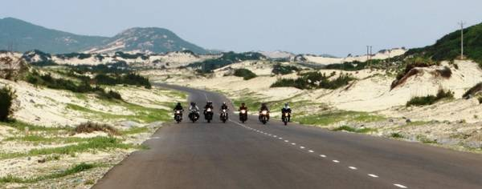
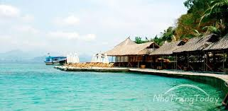

Du lịch Nha Trang – Cẩm nang du lịch 2018 mới nhất từ A đến Z
Được công nhận là một trong những vịnh biển đẹp nhất thế giới với thành phố êm ả nằm ngay bên bờ biển, du lịch Nha Trang trung tâm của tỉnh Khánh Hòa – miền đất được mệnh danh là “xứ Trầm, biển Yến”. “ Hòn ngọc của biển Đông” này có một sức lôi cuốn đặc biệt đối với khách du lịch tứ phương. Để thưởng ngoạn trọn vẹn vẻ đẹp của Nha Trang, hãy đọc ngay cẩm nang du lịch Nha Trang từ A đến Z mới nhất hiện nay dưới đây.
1. Nên đi du lịch Nha Trang vào thời điểm nào?
Nằm ở khu vực nam Miền Trung, Nha Trang cũng có những đặc thù về điều kiện tự nhiên của miền Duyên Hải Nam Trung Bộ. Khí hậu Nha Trang tương đối ôn hòa, không khắc nghiệt như ở miền Bắc và cũng không thất thường như miền Nam. Mùa đông ở Nha Trang ít lạnh, mùa hè thường kéo dài nhưng nắng nóng không quá gay gắt.
Chính vì vậy, trung tầm từ tháng 3 đến tháng 9 là thời điểm thích hợp nhất để có những chuyến đi du lịch Nha Trang thú vị. Nhưng bạn cũng cần lưu ý vào khoảng thời gian này, các
Bán đảo Đầm Môn nằm trong vịnh Vân Phong, thuộc xã Vạn Thạnh, huyện Vạn Ninh, tỉnh Khánh Hòa, cách thành phố Nha Trang khoảng 80 km theo quốc lộ 1A về phía Bắc.

Biển Đầm Môn rất êm ả đặc biệt là rất sạch, thấy tận đáy vì vùng biển được che chắn bởi bán đảo Hòn Gốm và Hòn Lớn theo hình cánh cung nên quanh năm không có sóng gió lớn.
Đến Đầm Môn bạn có thể tham quan làng chài tìm hiểu về cuộc sống nơi đây, ngắm cảnh vì nơi đây phong cảnh rất đẹp, là địa điểm tuyệt vời cho các nhiếp ảnh nghiệp dư hoặc chuyên nghiệp. Những hoạt động khác ở Đầm Môn mà du khách có thể trải nghiệm là khám phá đại dương với dịch vụ lặn biển ngắm san hô hoặc thuê tàu ra các đảo lớn, nhỏ khám phá vẻ đẹp ở từng đảo hay chỉ đơn giản là ngâm mình dưới một bãi biển trong vắt, dưới ánh nắng chiều lấp lánh.
Khu du lịch Con Sẻ Tre

Rời xa những con phố nhộn nhịp của thành phố Nha Trang, Con Sẻ Tre sẽ là điểm đến phù hợp để du khách tận hưởng không khí yên tĩnh, thanh bình. Khu du lịch nằm trên đảo Hòn Tre, được thiết kế theo phong cách làng quê dân dã, cổ điển. Từ thành phố Nha Trang, chỉ cần mất 15 phút đi tàu là có thể đến Con Sẻ Tre.
Điều thú vị đầu tiên đập vào mắt du khách khi đặt chân đến đây là tất cả nhà cửa, bàn ghế, nhà vườn, ngay cả nhà hàng trên đảo cũng đều làm bằng tre rất ấn tượng. Đơn giản nhưng vô cùng độc đáo, Con Sẻ Tre mang lại cho bạn cảm giác bình dị, gần gũi. Bạn như được hòa mình vào thiên nhiên một cách mộc mạc nhất.